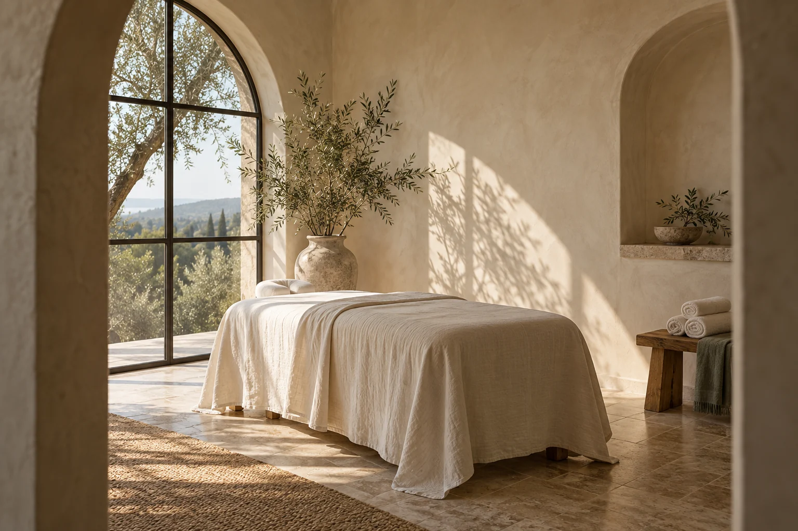

The grounding massage
Slow, intentional movements and warm botanical oils. An invitation to soften and settle.
Explore this ritual ↗Space to slow down
Unhurried rituals. Thoughtful touch. A little space between you and the everyday.
Find your moment
A little time.Just you.The art of doing a little less
Our rituals
Small, considered experiences with space to arrive, settle and leave feeling more like yourself.
Slow, intentional movements and warm botanical oils. An invitation to soften and settle.
Explore this ritual ↗A considered facial ritual with gentle cleansing, restorative touch and an unhurried finish.
Explore this ritual ↗A longer pause. Body and face rituals brought together, with tea and time at either end.
Explore this ritual ↗Make a little space
A simple booking experience, designed to feel as calm as the visit itself. Choose a ritual and explore a sample appointment.